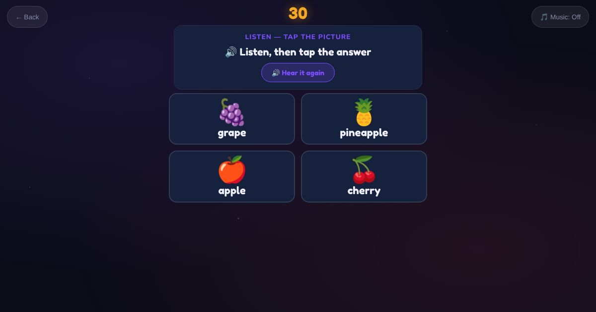

For teachers and tutors
About Fruits
Fruit vocabulary for shopping: apple, banana, orange, grape, mango, peach, plum, pear, lemon, cherry, strawberry, watermelon, pineapple, coconut and kiwi. The learner hears the word and spells it, or in multiple choice taps the matching picture.

How to play
- Listen to the fruit name.
- Type it, or tap the picture.
- Check it.
Play it as a class
Choose Fruits in the Teacher Game, and follow up with Shop or Read the List.